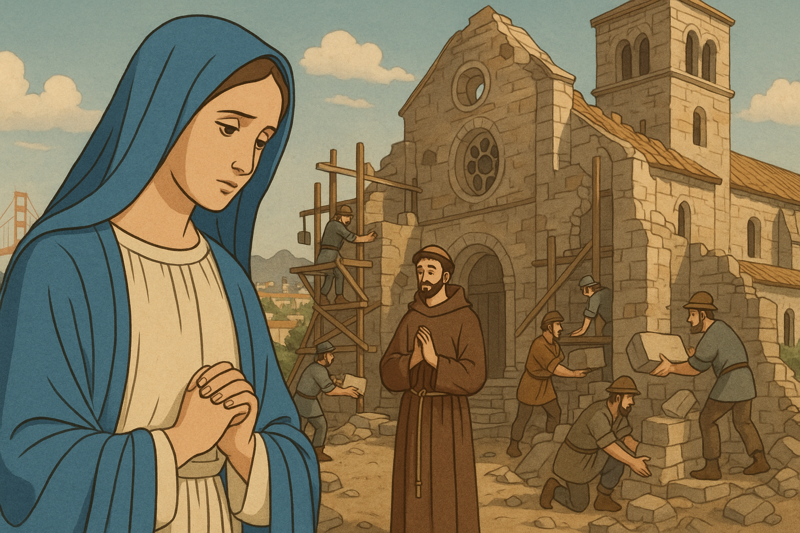

Parroquia Asunción de María
Industrial, Gustavo A. Madero, Ciudad de México
Inicio
Oficina
Historia ▾
Parroquia
Asunción de María
Eventos ▾
Calendario Mensual
Fiesta Patronal
Grupos Parroquiales
Misión
Contacto
Acceso ▾
Administrador
Coordinador
Seguimos recabando toda la información del visiteo
Les agradecemos su espera
